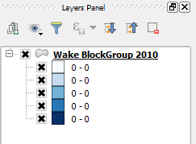

The layer's style in the map canvas should look much different.

The classes in the Layers panel, however, show strange interval values that are close to zero. This is because we are representing the number of inhabitants by square feet.
In the next steps, we will change the area units to square miles.